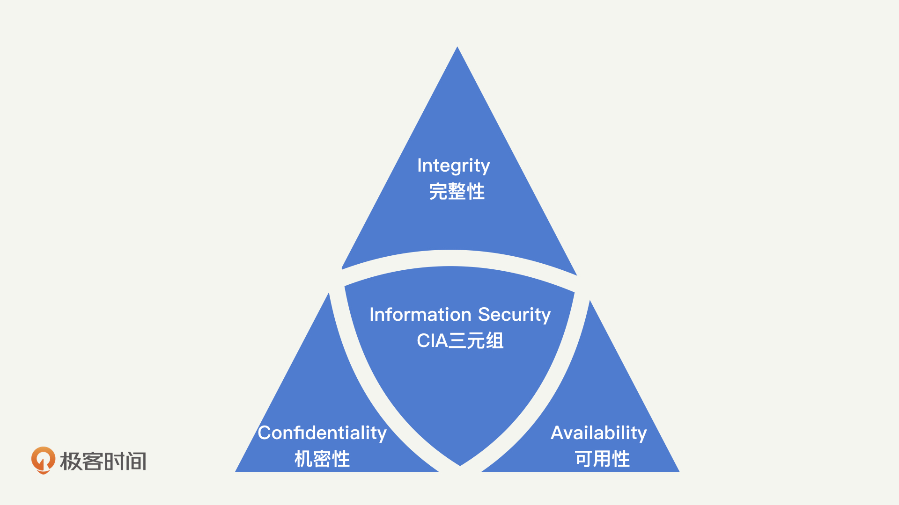

- 00 开篇词 别说你没被安全困扰过.md.html
- 01 安全的本质：数据被窃取后，你能意识到问题来源吗？.md.html
- 02 安全原则：我们应该如何上手解决安全问题？.md.html
- 03 密码学基础：如何让你的密码变得“不可见”？.md.html
- 04 身份认证：除了账号密码，我们还能怎么做身份认证？.md.html
- 05 访问控制：如何选取一个合适的数据保护方案？.md.html
- 06 XSS：当你“被发送”了一条微博时，到底发生了什么？.md.html
- 07 SQL注入：明明设置了强密码，为什么还会被别人登录？.md.html
- 08 CSRF_SSRF：为什么避免了XSS，还是“被发送”了一条微博？.md.html
- 09 反序列化漏洞：使用了编译型语言，为什么还是会被注入？.md.html
- 10 信息泄露：为什么黑客会知道你的代码逻辑？.md.html
- 11 插件漏洞：我的代码看起来很安全，为什么还会出现漏洞？.md.html
- 13 Linux系统安全：多人共用服务器，如何防止别人干“坏事”？.md.html
- 14 网络安全：和别人共用Wi-Fi时，你的信息会被窃取吗？.md.html
- 15 Docker安全：在虚拟的环境中，就不用考虑安全了吗？.md.html
- 16 数据库安全：数据库中的数据是如何被黑客拖取的？.md.html
- 17 分布式安全：上百个分布式节点，不会出现“内奸”吗？.md.html
- 18 安全标准和框架：怎样依“葫芦”画出好“瓢”？.md.html
- 19 防火墙：如何和黑客“划清界限”？.md.html
- 20 WAF：如何为漏洞百出的Web应用保驾护航？.md.html
- 21 IDS：当黑客绕过了防火墙，你该如何发现？.md.html
- 22 RASP：写规则写得烦了？尝试一下更底层的IDS.md.html
- 23 SIEM：一个人管理好几个安全工具，如何高效运营？.md.html
- 24 SDL：怎样才能写出更“安全”的代码？.md.html
- 25 业务安全体系：对比基础安全，业务安全有哪些不同？.md.html
- 26 产品安全方案：如何降低业务对黑灰产的诱惑？.md.html
- 27 风控系统：如何从海量业务数据中，挖掘黑灰产？.md.html
- 28 机器学习：如何教会机器识别黑灰产？.md.html
- 29 设备指纹：面对各种虚拟设备，如何进行对抗？.md.html
- 30 安全运营：“黑灰产”打了又来，如何正确处置？.md.html
- 加餐1 数据安全：如何防止内部员工泄露商业机密？.md.html
- 加餐2 前端安全：如何打造一个可信的前端环境？.md.html
- 加餐3 职业发展：应聘安全工程师，我需要注意什么？.md.html
- 加餐4 个人成长：学习安全，哪些资源我必须要知道？.md.html
- 加餐5 安全新技术：IoT、IPv6、区块链中的安全新问题.md.html
- 模块串讲（一）Web安全：如何评估用户数据和资产数据面临的威胁？.md.html
- 模块串讲（三）安全防御工具：如何选择和规划公司的安全防御体系？.md.html
- 模块串讲（二）Linux系统和应用安全：如何大范围提高平台安全性？.md.html
- 结束语 在与黑客的战役中，我们都是盟友！.md.html
- 捐赠
01 安全的本质：数据被窃取后，你能意识到问题来源吗？
你好，我是何为舟。
今天是我们安全课程的第一讲，我们不会讲具体的细节内容。我打算先和你聊聊安全本身，以帮你建立整体的大局观。我确信，只要理解了安全的本质，在后续的课程中，你就更容易理解安全的概念和知识，也就能够建立解决安全问题的思维体系。
安全是什么？
首先，我们来看，安全是什么？
当你所在的企业内网被入侵，数据被窃取之后，你也许能知道，是某个业务漏洞导致黑客能够进入内网，但你是否意识到，数据安全保护机制上同样产生了问题？类似这种的问题有很多。当我们遇到某一个特定的攻击或者安全问题时，往往看到的都是表象的影响，而能否找到根本原因并进行修复，才是安全投入的关键。
任何应用最本质的东西其实都是数据。用户使用产品的过程，就是在和企业进行数据交换的过程。比如，用户在使用微博时，或是将数据写入到微博（发博、评论、点赞等）中，或是从微博中获取数据（刷feed、热门流）；用户在使用支付宝进行交易时，则是将资产以数据的形式进行转移。
因此，从另一个层面来说，安全的本质就是保护数据被合法地使用。怎么才叫“被合法地使用”呢？我们可以从机密性、完整性、可用性这3个方面具体来看。这也是在安全领域内最为基础的3个安全原则。
安全原则
机密性（Confidentiality）、完整性（Integrity）、可用性（Availability），我们可以简称为CIA三元组，是安全的基本原则。理论上来说，一个完整的安全保障体系，应该充分考虑到所有的CIA原则。当然，实际情况中，我们会根据企业需求，对安全在这三个方向上的投入做取舍。我们平时在评判一个企业的安全水平时，也会分别从这三个方向进行考量。
可以说，CIA三元组原则，是安全领域内最基础也最重要的原则。你现在估计还没有感性认识，没关系，先有个整体印象，下面，我来给你详细讲解这三个原则的具体含义。

1.机密性
我们先来看机密性。机密性用一句话来说就是，确保数据只被授权的主体访问，不被任何未授权的主体访问。 简单用一个词总结就是“不可见”。
如何理解这个定义呢？举个例子，你不会允许陌生人查看你的个人隐私信息，但你可能会允许父母、朋友查看部分信息。同样的，对于应用中的数据，比如微信的朋友圈，你可以允许好友查看三天内的数据，但不允许好友查看三天前的数据。这些都是机密性在日常生活中的表现。
当然，首先你需要注意，机密性的一个前提是明确授权规则，也就是明确每一项数据可以被什么样的主体访问。在这个问题上，最安全的方法一定是，当每一次主体访问某一项数据时，都由相关负责人对该次行为进行审批。但是，这样显然是无法落地的，因为随着互联网的发展，每天都有万亿次的数据访问行为在发生。
因此，在安全领域我们提出了很多访问控制机制和安全模型，对数据和访问主体打上标签或者进行分类，并制定相应的访问控制规则去自动进行授权。关于访问控制机制，在后续的内容中我们会再详细介绍，这里暂时不展开。另外，数据的存储、传输和处理过程也需要受到应有的保护。这些保护技术包括：加密、隔离、混淆、隐藏等等。
那么，针对机密性的攻击，都有哪些形式呢？
有的会直接针对保护技术进行破解。比如，去破解加解密算法、去逆向混淆代码等等。经过长期的发展，这些保护技术普遍都趋于成熟，安全性也在不断地提高。有了前人的积累，在保护技术上，我们其实不需要做太多投入，只需要采用最新的技术即可。
更多的时候，我们面临的机密性攻击，其实是人为原因导致的疏忽，也就是错误使用访问控制机制或数据保护技术。比如，因为权限滥用，导致开发人员拥有敏感数据的无限制访问权限；因为弱密钥，导致加密被破解；甚至显示器上的数据被别有用心的人窥探。所以说，当前机密性保护的要点是引导人去做正确的事情，避免这类看似低级、实则普遍的漏洞发生。
可以说，机密性是我们最容易理解的一个安全原则，也是企业在建立安全时最先想到的点。总的来说，机密性保护的技术都已经十分成熟了，但是在实施和落地的时候，往往会出现误用安全技术的情况。人的懒惰性是不可避免的，因此，机密性的安全保护往往都无法达到最佳状态，而是处于一个可用性和安全性的动态平衡点上。
机密性强调的是数据的“不可见”，但这并不代表数据是正确的。比如，将一个“True”存成了“False”，这就不是机密性要考虑的事了，而这种错误的存储，则是完整性需要考虑的事情。
2.完整性
完整性就是确保数据只被授权的主体进行授权的修改，简单来说，就是“不可改”。
所谓“授权的修改”，就是对主体可进行的操作进行进一步的限制。比如，只能追加数据的主体无法执行删除的操作。以个人隐私信息为例，法律允许学校或者公司在个人档案内追加信息，但不能做任何修改。又或者说，你自己发的朋友圈，不希望被其他人进行修改。这些都是完整性的典型表现。
在授权方面，机密性中提到的访问控制机制同样适用。除此之外，完整性会更加强调对修改行为的日志记录，并有合适的监督机制进行审计。在保护技术方面，主要是利用加密、签名等技术，使得数据的完整性变得可验证。
你应该发现了，完整性和机密性是紧密相连的。因此，大部分的机制和技术都同时对完整性和机密性提供保护。
针对完整性的攻击也和机密性一样，更多的是由于人为原因导致的疏忽。除了黑客本身对数据的恶意篡改，已授权的主体也可能对数据完整性产生破坏，比如员工意外地误删除数据、程序bug导致错误数据被写入、正常用户的一些无效输入等。
相比于机密性，完整性往往容易被忽视。但是很多时候，机密性和完整性是共同出现的，做好了机密性的保护，基本也意味着做好了完整性的保护。因此，当我们在探讨安全问题、建设安全体系时，要将这两者结合起来，放在一起来研究。
机密性和完整性是为了保障数据是安全的，而数据的最终目的是要能够被看到或者使用。所以，对于数据来说，可用性也是很重要的一个方面。
3.可用性
可用性应该是你最熟悉的原则。因为它不仅仅是安全方向上的问题，也是工程上面临的主要挑战。用一句话来说就是，可用性就是确保数据能够被授权的主体访问到 ，简单来说，就是“可读”。
但事实上，可用性往往没有被划分到安全的责任中去，因为对于大部分企业来说，开发是最受到重视的，而开发会比安全首先去考虑可用性的问题。
举个典型的例子，面对高峰期的集中用户访问，如何保障用户能够正常地获取数据（“双11”购物或者DDoS攻击等），你可以看到大量的研发人员对这个问题进行探讨和分享，但这其实都属于安全在可用性上的考量范围。
在安全机制上，我们要确保授权机制能够正确运行，使得拥有访问数据的主体能够及时地被授权，这是可用性的基本。那具体来说，可用性会面临哪些挑战呢？
- 在运维层面上，有很多技术在为可用性提供支撑，比如，在基础建设上的机房建设（如何在断电、高温、火灾等情况下保护设备）、多地冗余，以及在服务中的备份、资源冗余等。
- 在研发层面上，如何降低响应延迟、如何处理海量数据、如何在峰值进行扩容等，这些问题其实都是在可用性上的挑战。
- 在攻击的角度上，黑客也会对可用性发起攻击，也就是我们常说的DoS（Denial of Service，拒绝服务）攻击。比如，通过发送大量的流量来占满带宽资源。
可用性一旦受到损害，其对企业的影响显而易见，也最容易受到关注。长久以来，无数研发和运维人员都投入了大量精力来进行完善。很多时候，可用性的投入，并不会非常精确地被划分到安全的责任中去。这正是我们最需要关注和去做的事情。
总结
好了，这一节的内容差不多了，我们来总结一下，你需要掌握的重点内容。
在所有的安全计划中，都会涉及对CIA三元组的取舍。不同的企业，在不同的发展阶段，CIA都会有不同的优先级。什么是CIA，你一定要牢记在脑海中，它将会贯穿我们整个专栏的学习。
通常来说，在互联网企业发展初期，可用性的优先级较高。如果涉及金钱相关的业务，则完整性的优先级更高；而涉及个人隐私相关的业务，则保密性的优先级更高。对于大部分企业而言，可用性在初期受到的挑战更多，则越发展越稳定，后期在可用性上的投入会逐渐降低。而完整性和机密性，会随着业务的发展，重要性越来越高，在企业的安全投入中，占比会越来越大。
因此，根据不同的发展阶段，列好CIA的优先级，是我们理解安全问题、定义安全需求、建设安全体系首先要做的事情。
思考题
假设，你正在参加一个面试，面试官问：“你能否从CIA三元组的三个特性出发，结合你们公司的业务系统情况，和我分享下你理解的安全是什么？”你会怎么回答呢？
欢迎留言和我分享你的思考和疑惑，也欢迎你把文章分享给你的朋友。我们下一讲再见！
© 2019 - 2023 Liangliang Lee. Powered by gin and hexo-theme-book.